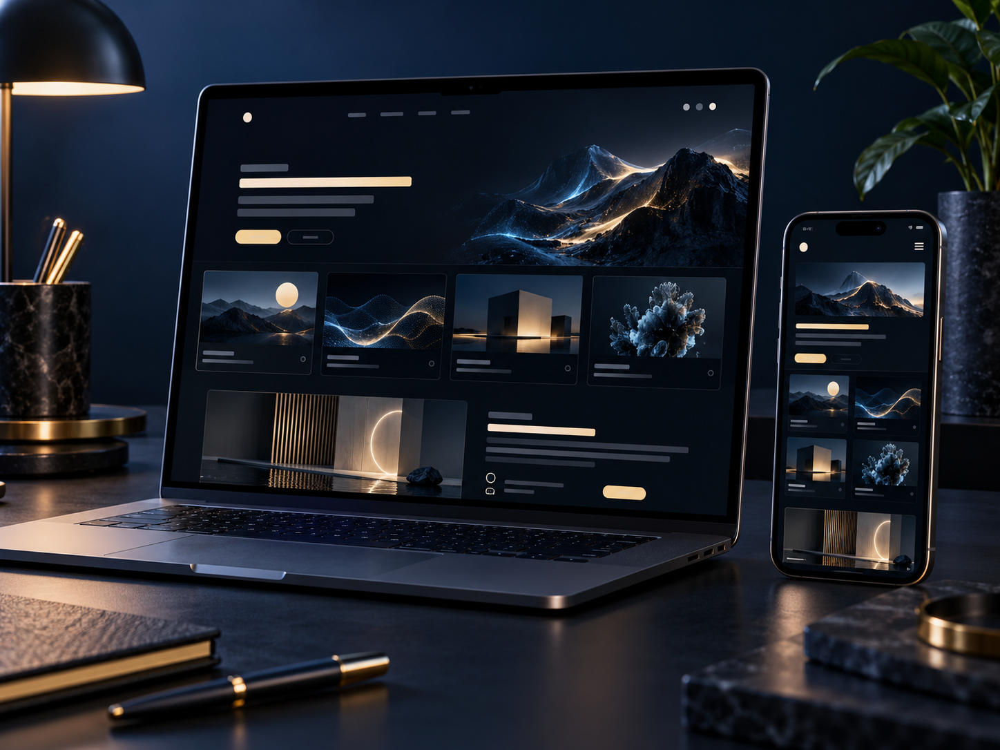
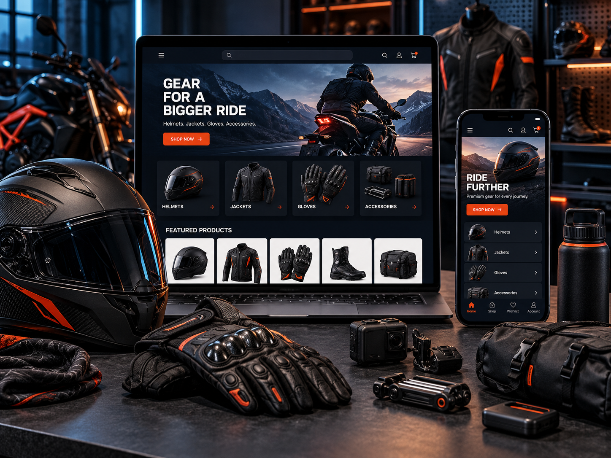
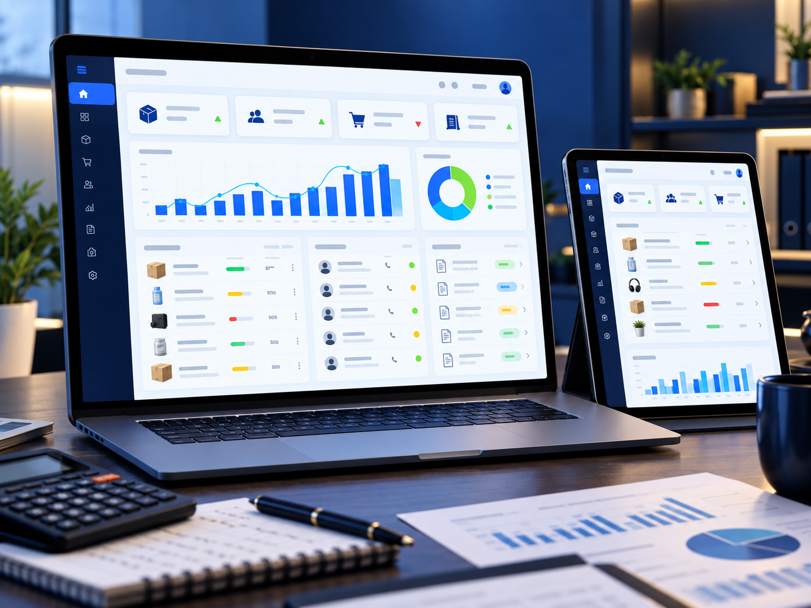
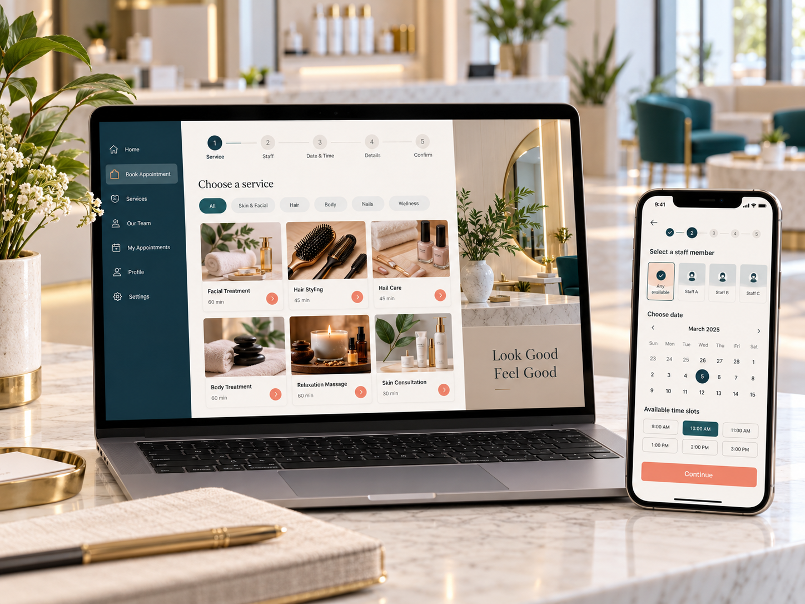

Web tasarım
Markanızın karakterini taşıyan; hızlı, anlaşılır ve her ekranda güçlü görünen web deneyimleri.
Detayları konuşalım ↗WEB TASARIM · YAZILIM · MOBİL
Markanızın dijitaldeki ilk izini strateji, tasarım ve sağlam yazılımla birlikte inşa ediyoruz.

NE YAPIYORUZ?
Sadece güzel görünen değil, iş hedefini anlayan ve kullanıcıyı harekete geçiren dijital ürünler tasarlıyoruz.
Markanızın karakterini taşıyan; hızlı, anlaşılır ve her ekranda güçlü görünen web deneyimleri.
Detayları konuşalım ↗Operasyonunuzu kolaylaştıran paneller, entegrasyonlar ve büyümeye hazır teknik altyapılar.
Detayları konuşalım ↗İnsanların her gün kullanmak isteyeceği sade, hızlı ve hedef odaklı mobil ürünler.
Detayları konuşalım ↗Marka, sektör ve hedefe göre dönüşüm odaklı sayfa mimarisi.
Hizmeti incele ↗02 / SİSTEMCRM, rezervasyon, teklif, stok ve operasyon akışları.
Hizmeti incele ↗03 / MOBİLFikirden prototipe, iOS ve Android için sade ürün deneyimleri.
Hizmeti incele ↗SEÇİLİ İŞLER
Demo projelerimizi gerçek bir portföy mantığıyla kurguladık. Her fikir, kendi dünyasına uygun bir deneyimle buluşur.
 Konsept çalışma
Konsept çalışma Konsept çalışma
Konsept çalışma Konsept çalışma
Konsept çalışma Konsept çalışma
Konsept çalışma Konsept çalışma
Konsept çalışma Konsept çalışma
Konsept çalışma
Konsept çalışma
Konsept çalışma
Konsept çalışma
Konsept çalışmaPortföydeki 10 çalışma, farklı sektör ve ürün tiplerinde Ada Web’in tasarım ve geliştirme yaklaşımını göstermek için hazırlanmış konsept demolarıdır.
NEDEN ADA WEB?
Bir siteyi yalnızca tasarlamıyor; nasıl bulunacağını, nasıl kullanılacağını ve nasıl geliştirileceğini de düşünüyoruz.
Hazır şablonu markaya giydirmek yerine sektörün dilini ve hedefini baştan kurarız.
Tasarım, yazılım, içerik ve büyüme kararları birbirinden kopmadan ilerler.
Site yayına çıktığında iş bitmez; bakım, ölçüm ve yeni ihtiyaçlar için yanınızda oluruz.
NASIL ÇALIŞIYORUZ?
Her proje için önce problemi ve hedefi netleştirir, sonra tasarım ve teknolojiyi aynı akışta ilerletiriz.
İş hedefi, hedef kitle ve rakipler üzerinden kısa ama net bir başlangıç çerçevesi çıkarırız.
Sayfa mimarisi, içerik hiyerarşisi ve kullanıcı akışını koddan önce görünür hâle getiririz.
Arayüz, responsive davranış, formlar ve teknik altyapı tek ekip içinde birlikte ilerler.
Test, performans, temel SEO ve yayın sonrası geliştirme adımlarını birlikte planlarız.
ÇALIŞMA ALANLARIMIZ
TEKNOLOJİ VE TESLİM
BİZ KİMİZ?
Farklı uzmanlıkları tek masada buluşturan Ada Web ekibi; fikirleri araştırır, tasarlar, geliştirir ve büyümeye hazır hâle getirir.
Ekiple tanışın ↗Genel Müdür · Strateji & müşteri ilişkileri
Proje yöneticisi · Web geliştirme
Web geliştirici · Kurumsal deneyimler
Mobil geliştirici · Uygulama ürünleri
Full stack geliştirici · Özel yazılım
Sosyal medya · SEO & içerik
ADA WEB NOTU
Fikrinizi dinler, sadeleştirir, görünür kılar ve yaşayan bir ürüne dönüştürürüz.
REHBER
İşletmenizin hedefi, içerik yoğunluğu ve büyüme planına göre doğru yapıyı seçin.
Oku ↗Adres, hizmet, harita ve iletişim bilgilerini yerel arama niyetiyle buluşturma notları.
Oku ↗İçerik, süre, bakım, alan adı ve teslim kapsamını baştan netleştirin.
Soruları gör ↗SIK SORULANLAR
İş hedefi, hedef kullanıcı, içerik ihtiyacı, rakipler ve yayın beklentisini netleştiriyoruz.
Kafe, restoran, dershane, freelancer ve tek hizmete odaklanan işletmeler için hızlı ve etkili bir başlangıç olabilir.
Evet. Yayın sonrası bakım, içerik güncellemesi, performans takibi ve yeni geliştirme ihtiyaçlarını kapsamınıza göre planlıyoruz.
Bu sürümdeki bazı çalışmalar konsept demodur. Gerçek müşteri işleri ve canlı bağlantılar ayrıca doğrulanarak eklenmelidir.
BİR FİKRİNİZ Mİ VAR?
Projenizi birkaç cümleyle anlatın, birlikte nasıl büyütebileceğimize bakalım.